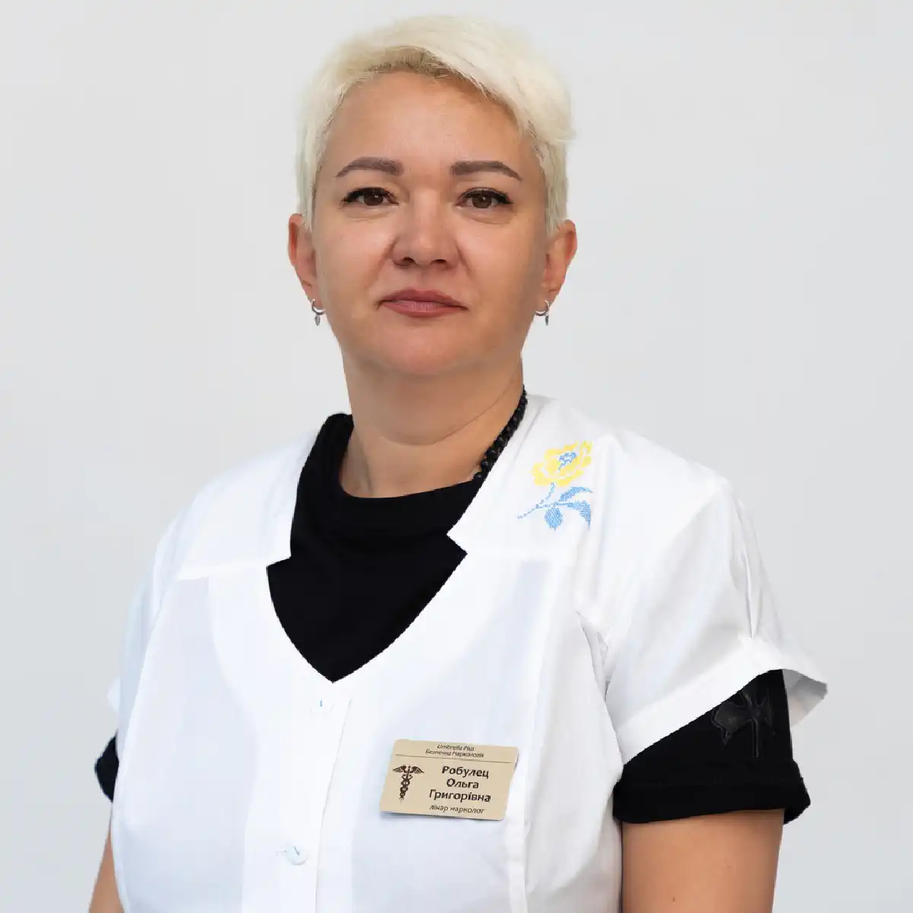

+38(068) 79 72 782
+38(068) 79 72 782Капельница от прегабалинов Одесса
Стабилизируем состояние за часы


Бесплатная консультация, работаем круглосуточно 24/7
Стабилизируем состояние за часы

Детоксикация от прегабалинов в Одессе — это специализированная медицинская услуга, направленная на быстрое и безопасное выведение действующего вещества из организма, устранение симптомов интоксикации и полную стабилизацию состояния пациента. Препараты на основе прегабалина (в том числе Лирика) широко применяются в медицине, однако при превышении дозировки, длительном бесконтрольном приёме или сочетании с алкоголем они способны вызывать серьёзные нарушения в работе организма и формировать зависимость.
Интоксикация прегабалином оказывает комплексное негативное воздействие: страдает центральная нервная система, нарушается работа сердца, ухудшается общее психоэмоциональное состояние. Пациент может испытывать выраженную слабость, дезориентацию, тревожность или, наоборот, сильную заторможенность. В более тяжёлых случаях возможны опасные осложнения, требующие срочного медицинского вмешательства.
Отравление прегабалином может проявляться по-разному в зависимости от дозировки, длительности приёма, сочетания с другими веществами и индивидуальных особенностей организма. На ранних этапах интоксикации симптомы могут казаться относительно лёгкими, что часто вводит в заблуждение и откладывает обращение за медицинской помощью. Чаще всего пациенты жалуются на выраженную слабость, головокружение, ощущение «ватности» в теле, сонливость и нарушение координации движений. Уже на этом этапе снижается концентрация внимания и замедляются реакции, что может быть опасно в повседневной жизни.
По мере нарастания интоксикации состояние ухудшается. Появляется спутанность сознания, дезориентация в пространстве, заторможенность или, наоборот, психомоторное возбуждение. У некоторых пациентов возникают тревожные расстройства, панические атаки, резкие перепады настроения. Нарушается речь — она становится неразборчивой, замедленной, возможны проблемы с формулировкой мыслей. Также страдают память и когнитивные функции, что указывает на выраженное влияние препарата на центральную нервную систему.
В тяжёлых случаях интоксикация прегабалином переходит в опасную стадию. Могут возникать судорожные приступы, резкое снижение артериального давления, нарушение сердечного ритма, угнетение дыхания и потеря сознания вплоть до комы. Такие состояния представляют прямую угрозу для жизни пациента и требуют немедленного медицинского вмешательства. В подобных ситуациях критически важно как можно быстрее обратиться за профессиональной наркологической помощью, чтобы стабилизировать состояние и предотвратить необратимые последствия.
Прегабалин оказывает выраженное влияние на центральную нервную систему, воздействуя на передачу нервных импульсов и снижая возбудимость нейронов. В терапевтических дозах это позволяет уменьшать боль и тревожность, однако при превышении дозировки происходит чрезмерное угнетение нервной активности. В результате нарушается координация движений, замедляются реакции, ухудшается концентрация и работа мозга в целом. Пациент может ощущать сильную заторможенность, «отключение» от реальности, снижение способности адекватно оценивать происходящее.
Параллельно страдает сердечно-сосудистая система, поскольку организм вынужден адаптироваться к токсической нагрузке. Возможны резкие скачки артериального давления, нарушение сердечного ритма, ощущение перебоев в работе сердца и ухудшение общего кровообращения. Такие изменения особенно опасны для людей с хроническими заболеваниями, так как могут спровоцировать обострение или развитие острых состояний. При сочетании прегабалина с алкоголем или другими психоактивными веществами нагрузка на сердце возрастает в несколько раз. Удар приходится на печень и почки — органы, отвечающие за нейтрализацию и выведение токсинов. При интоксикации их работа значительно перегружается, что замедляет процесс очищения организма. Токсины начинают накапливаться в крови, усиливая общее отравление и ухудшая состояние пациента. При длительном злоупотреблении возможно развитие функциональных нарушений этих органов, что повышает риск серьёзных осложнений.
Прегабалин — это активное действующее вещество, входящее в состав ряда лекарственных препаратов, применяемых в неврологии и психиатрии. Наиболее известным торговым названием является Лирика, однако на фармацевтическом рынке представлены и другие аналоги с тем же механизмом действия. Эти препараты относятся к группе противосудорожных средств и используются для воздействия на центральную нервную систему, снижая чрезмерную нервную активность и болевую чувствительность. К наиболее распространённым препаратам на основе прегабалина относятся:
Все эти препараты содержат одно и то же действующее вещество, однако могут отличаться дозировками, формой выпуска и производителем. В медицинской практике препараты на основе прегабалина назначаются при нейропатической боли, генерализованных тревожных расстройствах, эпилепсии, а также в ряде случаев при хронических болевых синдромах. Их применение позволяет уменьшить выраженность симптомов и улучшить качество жизни пациента. Однако при этом важно строго соблюдать назначенную дозировку и режим приёма, поскольку препарат влияет на психоэмоциональное состояние и работу мозга. Несмотря на легальный статус и широкое использование в медицине, прегабалин обладает потенциалом формирования зависимости, особенно при длительном или неконтролируемом приёме. Самостоятельное увеличение дозировки, частое употребление без назначения врача или использование с целью получения психоактивного эффекта значительно повышают риск интоксикации и развития осложнений.
Многие пациенты пытаются справиться с последствиями приёма прегабалина самостоятельно, рассчитывая на то, что состояние нормализуется со временем. Однако такой подход может быть не только неэффективным, но и опасным для здоровья. Домашние методы, такие как обильное питьё, сон или приём «подручных» препаратов, способны лишь частично снизить выраженность симптомов, но не устраняют основную причину — наличие токсического вещества в организме и его воздействие на центральную нервную систему.
Проблема заключается в том, что без профессиональной помощи процесс интоксикации продолжается, а нагрузка на внутренние органы только усиливается. Токсины продолжают циркулировать в крови, влияя на работу мозга, сердца и дыхательной системы. В тяжёлых случаях это может привести к резкому ухудшению состояния: нарушению дыхания, сбоям сердечного ритма, выраженной дезориентации или потере сознания. Особенно опасны ситуации, когда прегабалин был принят в повышенной дозе или в сочетании с алкоголем и другими веществами. Профессиональная детоксикация под контролем врача позволяет воздействовать на проблему комплексно и максимально быстро. С помощью инфузионной терапии снижается концентрация токсинов в крови, восстанавливается водно-электролитный баланс, поддерживается работа жизненно важных органов.
Передозировка прегабалином может привести к серьёзным и потенциально опасным для жизни последствиям, поскольку оказывает выраженное влияние на центральную нервную систему и работу внутренних органов. Одним из ключевых рисков является угнетение активности мозга, что проявляется в виде сильной сонливости, заторможенности, потери ориентации и способности адекватно реагировать на происходящее. В более тяжёлых случаях возможно развитие глубокого угнетения сознания вплоть до комы, что требует немедленного медицинского вмешательства.
Дополнительно страдают дыхательная и сердечно-сосудистая системы. Передозировка может сопровождаться нарушением дыхания, ощущением нехватки воздуха, снижением частоты дыхательных движений. Со стороны сердца возможны перебои ритма, учащённое или замедленное сердцебиение, резкие скачки артериального давления. Такие состояния представляют особую опасность для пациентов с хроническими заболеваниями и могут привести к острым осложнениям. При регулярном злоупотреблении препаратами на основе прегабалина формируется зависимость, которая затрагивает не только физическое, но и психоэмоциональное состояние человека. Возникают тревожные расстройства, перепады настроения, снижение когнитивных функций, ухудшение памяти и концентрации.
Сочетание прегабалина с алкоголем значительно усиливает токсическое воздействие на организм и считается одним из наиболее опасных факторов развития тяжёлой интоксикации. Оба вещества оказывают угнетающее влияние на центральную нервную систему, и при их одновременном употреблении этот эффект многократно усиливается. В результате происходит выраженное торможение работы мозга, снижение уровня сознания и нарушение жизненно важных функций.
На фоне такого сочетания у пациента могут быстро развиваться опасные симптомы: сильная слабость, потеря координации, выраженная заторможенность или дезориентация. Нарушается речь, снижается способность к концентрации, ухудшается контроль над движениями. Особую угрозу представляет угнетение дыхательного центра — дыхание становится поверхностным, замедленным или нерегулярным, что может привести к критическим состояниям.
В тяжёлых случаях возможно развитие глубокой потери сознания, комы и даже остановки дыхания. Риск подобных осложнений особенно высок при превышении дозировки, длительном употреблении или наличии сопутствующих заболеваний. Такие состояния требуют немедленного медицинского вмешательства. Капельница в подобных ситуациях является одним из наиболее эффективных методов экстренной помощи.
Лечение интоксикации прегабалином проводится поэтапно и требует комплексного медицинского подхода, направленного не только на устранение острых симптомов, но и на полное восстановление организма. Первым и ключевым этапом является детоксикация — очищение крови от токсических веществ и стабилизация общего состояния пациента. На этом этапе используются инфузионные растворы, которые помогают ускорить выведение прегабалина, нормализовать водно-электролитный баланс и снизить нагрузку на внутренние органы.
После устранения острой интоксикации начинается этап медикаментозной поддержки. Он направлен на восстановление функций центральной нервной системы, стабилизацию сердечно-сосудистой деятельности, нормализацию сна и психоэмоционального состояния. Врач подбирает препараты индивидуально, учитывая степень интоксикации, общее состояние пациента и наличие сопутствующих заболеваний. Это позволяет минимизировать риски осложнений и ускорить процесс восстановления. При наличии признаков зависимости или выраженных психоэмоциональных нарушений подключается психотерапевтическая помощь. Работа со специалистом помогает выявить причины употребления, снизить тягу к препарату и сформировать устойчивую мотивацию к отказу от него.
Стоимость капельницы от прегабалинов в Одессе начинается от 2499 грн.
| Популярные услуги | Цена |
|---|---|
| Консультация нарколога | От 1500 грн |
| Лечение наркомании | От 2499 грн |
| Капельница от наркотиков | От 2499 грн |
| Вывод из запоя на дому | От 2199 грн |
В некоторых случаях состояние пациента требует не только оказания помощи на дому, но и обязательной госпитализации в стационар. Такая необходимость возникает при тяжёлой степени интоксикации, когда организм не способен самостоятельно справляться с токсической нагрузкой. К критическим показаниям относятся нарушение дыхания, судорожные приступы, выраженное угнетение сознания, потеря сознания, а также резкие нарушения работы сердечно-сосудистой системы.
В подобных ситуациях лечение в домашних условиях может быть недостаточным и небезопасным. Стационарное наблюдение позволяет обеспечить круглосуточный медицинский контроль, оперативно реагировать на любые изменения состояния пациента и при необходимости проводить интенсивную терапию. Это может включать расширенную инфузионную поддержку, мониторинг жизненно важных показателей, кислородную терапию и другие методы, направленные на стабилизацию состояния. Особую важность госпитализация приобретает при сочетании прегабалина с алкоголем или другими психоактивными веществами, а также при наличии хронических заболеваний, которые могут осложнять течение интоксикации. В таких случаях риск развития осложнений значительно возрастает, и пациенту требуется более тщательное наблюдение.
Анонимность является одним из ключевых факторов при обращении за наркологической помощью, поскольку именно страх огласки чаще всего становится причиной откладывания лечения. Многие пациенты опасаются постановки на учёт, передачи информации третьим лицам или возможных последствий для работы, семьи и социального статуса. Именно поэтому конфиденциальный формат лечения играет важную роль в принятии решения обратиться к специалисту.
Современная наркологическая помощь предусматривает полную защиту личных данных пациента. Лечение может проводиться без постановки на государственный учёт, без передачи информации в сторонние организации и без раскрытия личности. Врач соблюдает медицинскую тайну, а все процедуры проходят в максимально комфортных и закрытых условиях — как на дому, так и в клинике. Анонимность позволяет пациенту обратиться за помощью без страха осуждения и лишнего стресса, что особенно важно при зависимостях.
Психиатр-нарколог играет ключевую роль в лечении зависимости от прегабалина, поскольку именно этот специалист работает одновременно с физической и психической составляющей заболевания. Зависимость формируется не только на уровне организма, но и на уровне поведения, привычек и эмоциональных реакций, поэтому одного лишь снятия интоксикации недостаточно для полноценного выздоровления. Врач оценивает общее состояние пациента, степень зависимости, психоэмоциональный фон и подбирает индивидуальную стратегию лечения.
Основная задача специалиста — не только устранить физическую тягу к препарату, но и выявить глубинные причины употребления. Это могут быть хронический стресс, тревожные расстройства, депрессия или другие психологические проблемы. Без их проработки риск повторного употребления остаётся высоким даже после успешной детоксикации. Комплексная терапия включает медикаментозное лечение, направленное на стабилизацию состояния, снижение тревожности и восстановление сна, а также психотерапию, которая помогает изменить мышление и поведенческие модели. Пациент получает поддержку на всех этапах восстановления, что позволяет постепенно сформировать устойчивую мотивацию к отказу от употребления и возвращению к полноценной жизни.
Реабилитация является ключевым этапом лечения зависимости от прегабалина, направленным на полное восстановление пациента и возвращение к стабильной, трезвой жизни. В отличие от детоксикации, которая устраняет физические последствия употребления, реабилитация работает с психологическими и поведенческими аспектами зависимости. Она включает комплекс мероприятий, направленных на восстановление психоэмоционального состояния, нормализацию внутреннего баланса и постепенную социальную адаптацию пациента.
В ходе реабилитационного процесса особое внимание уделяется формированию новых жизненных установок и привычек. Пациент учится распознавать триггеры, которые ранее провоцировали употребление, и вырабатывает эффективные стратегии их преодоления. Работа с психологами и специалистами помогает снизить уровень тревожности, улучшить эмоциональную устойчивость и восстановить контроль над собственным поведением. Кроме того, важной частью реабилитации является восстановление социальных связей. Пациент постепенно налаживает отношения с близкими, возвращается к повседневной активности, работе или обучению. Это помогает укрепить мотивацию к трезвому образу жизни и сформировать чувство ответственности за своё здоровье.
Круглосуточная наркологическая помощь позволяет получить квалифицированную медицинскую поддержку в любое время суток — независимо от ситуации и тяжести состояния пациента. Это особенно важно при острых интоксикациях, передозировке или резком ухудшении самочувствия, когда промедление может привести к серьёзным осложнениям. Возможность обратиться за помощью ночью, в выходные или праздничные дни существенно повышает шансы на быстрое и безопасное восстановление.
Оперативный выезд врача на дом обеспечивает максимально быстрое начало лечения без необходимости транспортировки пациента в клинику, что особенно актуально при тяжёлом состоянии. Специалист проводит первичную диагностику, оценивает степень интоксикации, измеряет жизненно важные показатели и сразу приступает к оказанию медицинской помощи. Такой формат позволяет минимизировать стресс для пациента и начать детоксикацию в привычных и комфортных условиях. Круглосуточный режим работы гарантирует непрерывность медицинской поддержки и возможность своевременно реагировать на любые изменения состояния. Это делает помощь максимально доступной, эффективной и безопасной, обеспечивая пациенту необходимые условия для быстрого улучшения самочувствия и дальнейшего восстановления.
Телефон для консультации и вызова нарколога: +38(050-021-69-57)

Да, мы строго соблюдаем полную конфиденциальность на всех этапах лечения. Информация о пациенте, диагнозе и прохождении терапии не передаётся третьим лицам. Обращение к нам не влечёт постановку на учёт. Вы можете быть уверены в безопасности и анонимности.
Программа лечения разрабатывается индивидуально после консультации со специалистом. Учитываются вид зависимости, её длительность, физическое и психологическое состояние пациента. Такой подход позволяет повысить эффективность терапии и снизить риск срыва. Мы не используем шаблонные решения.
Да, мы сопровождаем пациентов и после основного курса лечения. Проводятся консультации, рекомендации по адаптации и профилактике рецидивов. При необходимости возможна дальнейшая психологическая поддержка. Это помогает сохранить результат и вернуться к полноценной жизни.
Анонимно

Помогли при ломке
Анонимно
Хочу поблагодарить специалистов фирмы «Амбрела плюс» за реальную помощь в сложный период. Обратился в состоянии ломки, было тяжело и физически, и морально. Врачи отреагировали быстро, всё объяснили, поддерживали на каждом этапе. Состояние стабилизировали, стало значительно легче уже в первые часы. Спасибо за профессионализм и человеческое отношение.
Номер телефона:
+380 (68) 797 27 82
+380 (50) 021 69 57
Адрес наркологического центра вашего города уточняйте по
телефону
Работаем в: Киеве, Одессе, Львове, Харькове, Днепре,
Запорожье, Черкассах, Чугуеве, Черноморске, Каменском
Telegram: t.me/umbrellaplus
График работы: Круглосуточно